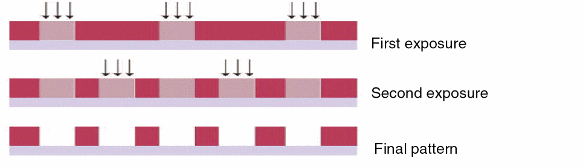

1
Introduction
This chapter provides a general overview of multi-patterning lithography, its challenges, and how Virtuoso® Multi-Patterning Technology (MPT) can help you meet the needs for advanced node designs.
Multi-Patterning Lithography
For a number of years, IC manufacturing has been pushing the limits of optical lithography to make silicon with features smaller than the conventional ones by employing various resolution enhancement techniques (RET). As the manufacturing equipment and lithography process struggle to keep up with diminishing feature dimensions, their resolution capabilities have fallen further and further behind the target minimum feature size per each advanced node. As a result, optical lithography has finally become unable to print shapes on silicon with a single mask in a single pass starting at 20nm. Available RET/optical proximity correction (OPC) techniques are not able to yield expected feature sizes in close proximity reliably.
The solution to this problem is to use a technique that has existed for years in the photographic industry known as multi-patterning in which two or more mask processes are used to manufacture each design layer. For each design layer, the layout geometry must be decomposed onto separate masks (or colors), typically based on proximity to the nearest shape. To represent a particular mask at the design level, a "color" is associated with each layout shape to indicate the mask used to print the shape. Color decomposition is the process of determining the mask used to print each of the shapes on the same drawn layer while ensuring that none of the shapes assigned to the same mask are too close together to be printed correctly. After a successful decomposition, all geometries with the same color must be at least same mask spacing apart, where the same mask spacing value is defined by the foundry rules. Shapes with different colors can be closer together than same mask spacing because they are printed by different masks, and therefore, do not interact optically like the shapes on the same mask.
Multi-Patterning Technology
For advanced nodes, two or more lithography masks are needed and Multi-Patterning Technology (MPT) is used. There are two popular techniques for applying multiple patterning:
-
Litho-Etch-Litho-Etch (LELE)
Each mask exposure is followed by an etching step. A simple double-pattern diagram is shown here.
 -
Self-Aligned Double Patterning (SADP)
The first mask uses side walls (edges) of a feature to define the desired patterns, followed by a second "trim" mask to block out unwanted patterns.
Introducing Virtuoso Multi-Patterning Technology
Virtuoso® Multi-Patterning Technology (MPT) is used for multi-patterning lithography, such as Litho-Etch-Litho-Etch (LELE) and Self-Aligned Double Patterning (SADP), and uses different colors to represent up to four masks for each drawn layer. For LELE, the colors directly map to the masks. For SADP, this method is effective in determining whether a design can be successfully decomposed during the mask-making step.
Virtuoso MPT supports many coloring schemes, including the following:
-
Schematic-Driven Layout Support of Mask Name
In the schematic view, critical nets are identified and placed in a net class. A Same Mask pre-coloring constraint can be assigned to the net class to specify that all the shapes for the nets in the net class must be on the same mask for each routing layer. In addition, the mask name can be specified. During stream out, shapes for pre-colored nets are locked to their current color. For more information, see Net-Based Pre-Coloring Flow. -
Interactive Coloring in Layout
In the layout view, there are many ways to color shapes and view color properties, such as using the Properties Editor, Palette Assistant, Dynamic Selection, and the Multiple Patterning toolbar. -
Coloring using width spacing patterns for track-based routing
For more information, see Virtuoso Width Spacing Patterns User Guide. -
Coloring using an external engine
For more information, see Fully Colored Backannotation Flow.
These schemes can be used in combination with color designs.
Virtuoso MPT also supports methods for the following:
-
Checking for multi-patterning violations in layout
Pegasus Interactive and Virtuoso DRD can be used to identify same-mask spacing violations. For more information, refer to Checking for Multiple Patterning Violations. -
Fixing multi-patterning violations
Multi-patterning violations may be fixed by moving, splitting, or stretching shapes, or by polygon splicing (stitching). For more information, refer to Fixing Multiple Patterning Violations. -
Abstract generation
Virtuoso® Abstract Generator is a library modeling tool that has been enhanced to generate a color-annotated abstract cellview from a color-annotated layout cellview, as described in Multi-Patterning Technology Support in Abstract Generator in Virtuoso Abstract Generator User Guide. -
XStreamIn/Out
Color mapping functionality has been added to XStream In and XStream Out translators, as described in Using XStream.
Return to top